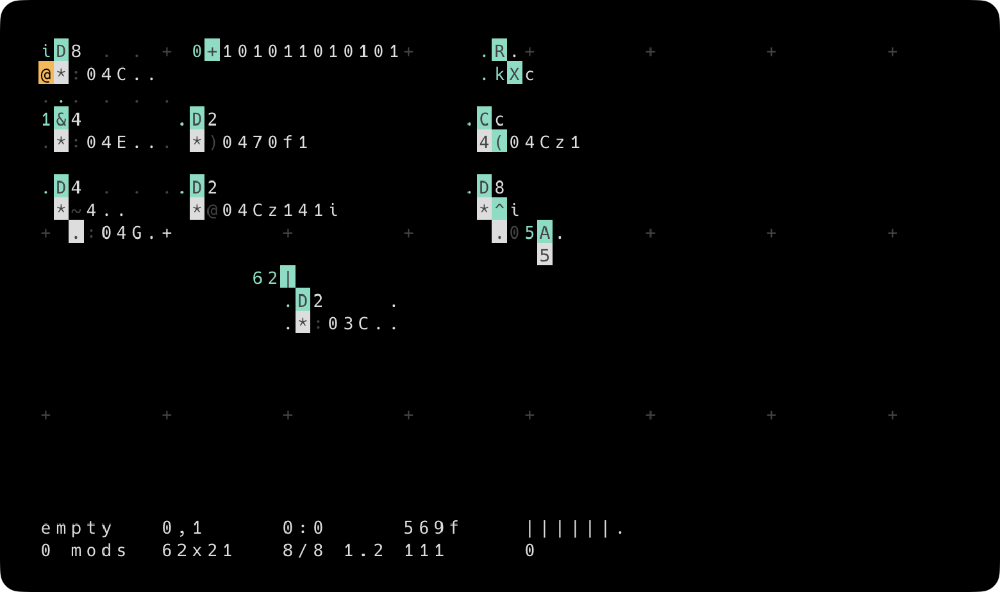
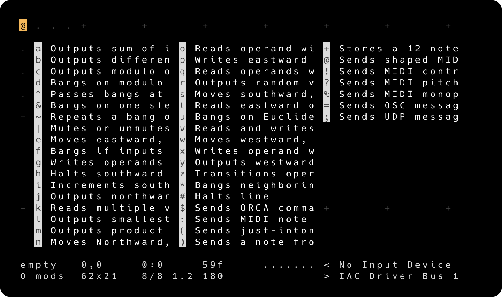
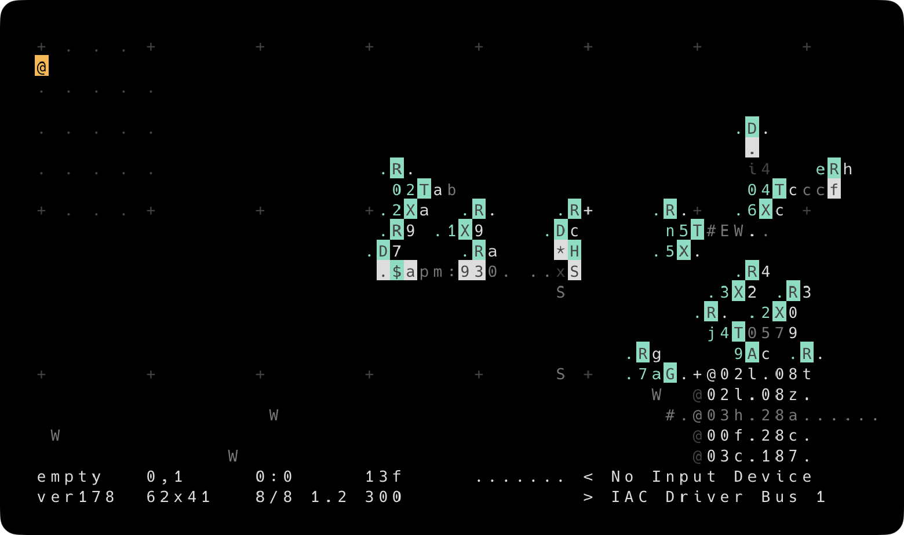
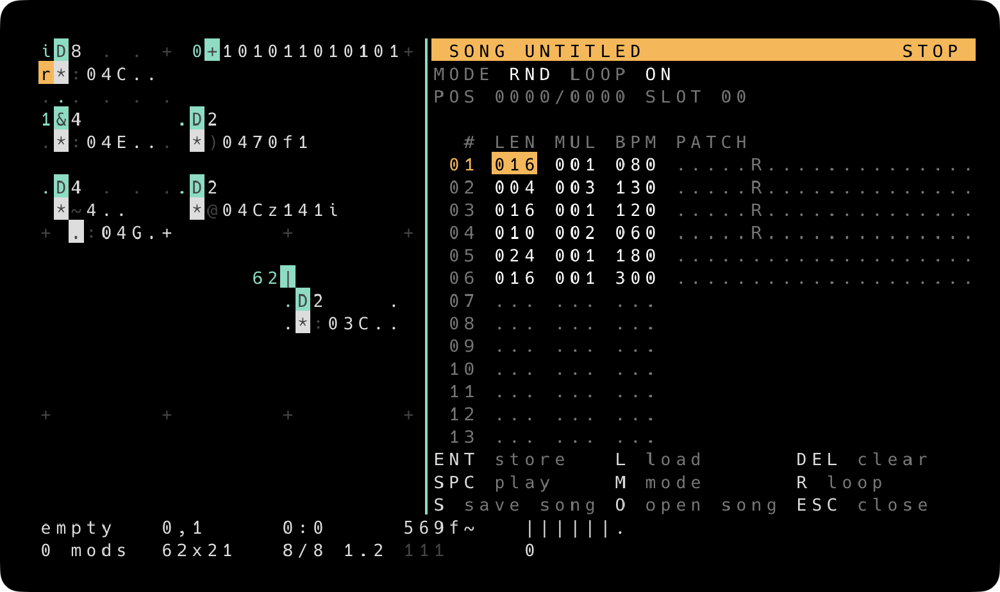
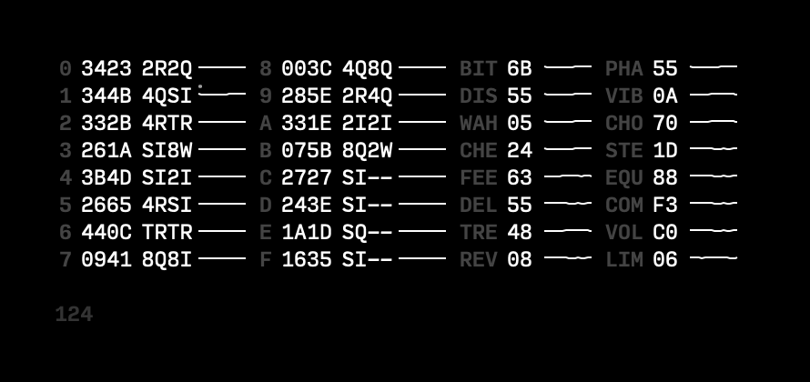
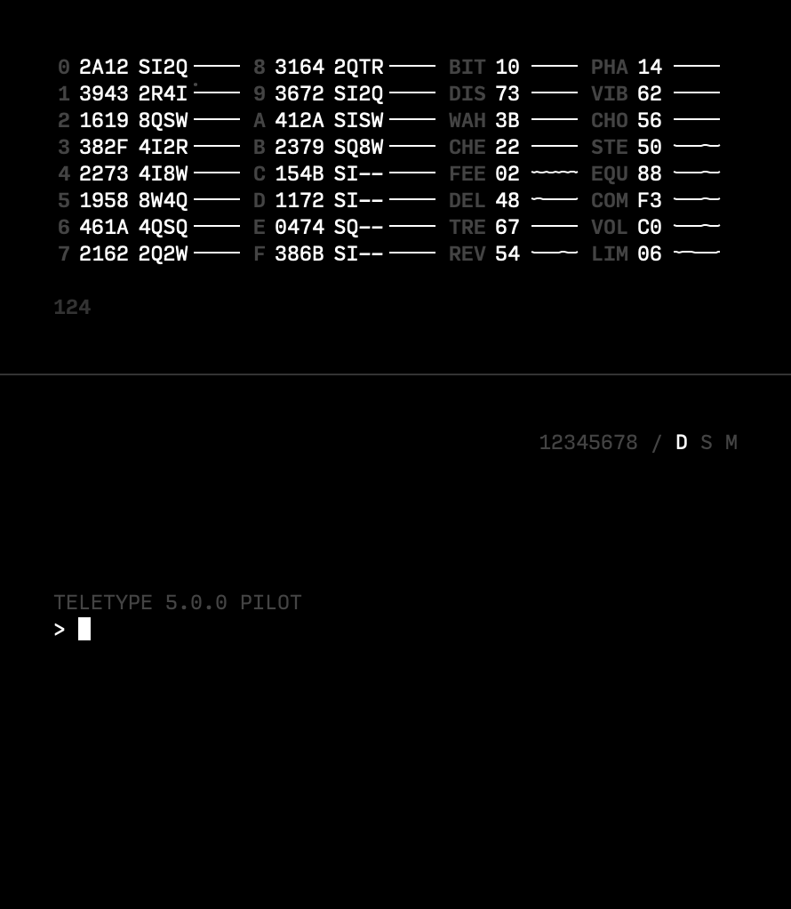

a live-coding sequencer for MIDI, OSC and UDP, after Hundred Rabbits’ Orca
with pilot sealflake, the synth it plays
orca seaflake 0.10.2 · pilot sealflake 1.1.1 · github.com/femifleming/orca_seaflake
Orca Seaflake is a version of Orca, the esoteric programming language by Hundred Rabbits for building procedural sequencers. The whole program is a grid of characters. Every letter of the alphabet is an operation: uppercase letters run on every frame of the clock, lowercase letters run when a bang (*) lands next to them. Numbers and letters next to an operator are its inputs; what it computes appears in the cell below it, where the next operator reads it. A patch is a plain text file you can read and write by hand.
It is not a synthesizer. It is a live-coding environment that sends MIDI, OSC and UDP to whatever makes the sound: Ableton, Renoise, VCV Rack, SuperCollider, a hardware synth, or Pilot Sealflake, the synth in this same download that listens to Orca's ; operator with no set-up at all.

Seaflake keeps every original Orca operator exactly as it is in the released Orca app, defaults included, so patches made for Orca play the same. It adds:
^), phase clocks (&), timed bursts (~), muting blocks (|), scales (+ and )), just intonation (() and shaped note runs (@)..song files.Download the file for your computer from github.com/femifleming/orca_seaflake/releases/latest, then follow the step next to it.
| Your computer | Download | Then |
|---|---|---|
| Mac with Apple Silicon (M1, M2, M3, M4…) | Orca-Seaflake-darwin-arm64.pkg | Double-click it and follow the installer. |
| Mac with an Intel processor | Orca-Seaflake-darwin-x64.pkg | Double-click it and follow the installer. |
| Windows 10 or 11 (64-bit) | Orca-Seaflake-win32-x64.zip | Right-click → Extract All, open the folder, run orca-seaflake.exe. |
| Ubuntu / Debian (Intel or AMD) | orca-seaflake_amd64.deb | sudo apt install ./orca-seaflake_amd64.deb |
| Raspberry Pi OS 64-bit (Pi 3, 4, 5), Ubuntu / Debian on ARM | orca-seaflake_arm64.deb | sudo apt install ./orca-seaflake_arm64.deb |
| Other Linux (Intel/AMD or ARM64) | Orca-Seaflake-linux-x64.tar.gz · Orca-Seaflake-linux-arm64.tar.gz | Extract it and run ./orca-seaflake inside the folder. |
Then open Orca Seaflake from Applications (macOS), the extracted folder (Windows), or your app menu / the orca-seaflake command (Linux).
On a Mac you can also install with Homebrew, from the one tap that holds all of femifleming's apps, and update later with brew upgrade:
brew tap femifleming/tap && brew trust --tap femifleming/tap brew install --cask femifleming/tap/orca-seaflake
Not sure which one you need?
uname -m in a terminal. aarch64 means 64-bit; armv7l or armv6l means 32-bit. The desktop app needs 64-bit (Pi 3, 4 or 5), so on 32-bit Raspberry Pi OS use the terminal version.First launch: the app isn't signed with a paid Apple or Microsoft certificate, so your computer may warn you once.
The terminal version runs the same operators and Song Mode without a window. On a Mac with Homebrew, one command installs it, Node.js included:
brew install femifleming/tap/orca-seaflake-terminal
Otherwise install Node.js LTS (nodejs.org; on Raspberry Pi OS, Ubuntu and Debian sudo apt install -y nodejs npm alsa-utils), then:
npm install -g https://github.com/femifleming/orca_seaflake/releases/latest/download/orca-seaflake-terminal.tgz
(on Linux and Raspberry Pi, put sudo in front) and run it with orca-seaflake. Chapter 7 has the details.
The synth that answers Orca's ; operator. It downloads and installs on its own; take either one, or both.
| Your computer | Download | Then |
|---|---|---|
| Mac (Apple Silicon or Intel) | Pilot-Sealflake-macos.pkg | Double-click it: installs the app, the VST3 and the AU. |
| Mac, without an installer | Pilot-Sealflake-macos.zip | Drag the app to Applications; plug-ins go in ~/Library/Audio/Plug-Ins/VST3 and Components. |
| Windows 10 or 11 (64-bit) | Pilot-Sealflake-windows-x64.zip | Extract it, run Pilot Sealflake.exe. Copy Pilot Sealflake.vst3 to C:\Program Files\Common Files\VST3 for your DAW. |
| Ubuntu / Debian (Intel or AMD) | pilot-sealflake_amd64.deb | sudo apt install ./pilot-sealflake_amd64.deb, then run pilot-sealflake (VST3 and LV2 included). |
| Raspberry Pi OS 64-bit, Ubuntu / Debian on ARM | pilot-sealflake_arm64.deb | sudo apt install ./pilot-sealflake_arm64.deb |
| Other Linux | Pilot-Sealflake-linux-x64.tar.gz · Pilot-Sealflake-linux-arm64.tar.gz | Extract it and run ./install.sh (installs for your user), or run ./pilot-sealflake in place. |
With Homebrew on a Mac (or Homebrew on Linux, and Scoop on Windows):
brew install --cask femifleming/tap/pilot-sealflake # macOS: app + VST3 + AU brew install --formula femifleming/tap/pilot-sealflake # Linux scoop bucket add femifleming https://github.com/femifleming/homebrew-tap scoop install femifleming/pilot-sealflake # Windows
Start Pilot Sealflake, then in Orca write ; with a Pilot command, for example ;04C (channel 0, octave 4, C). Chapter 8 has everything Pilot understands.
Install Node.js 18 or newer, then:
git clone https://github.com/femifleming/orca_seaflake.git cd orca_seaflake/desktop npm install npm start
For the terminal version from source, run npm install and then npm link in the terminal folder instead. Pilot Sealflake builds with CMake (cmake -B build -G Ninja -DCMAKE_BUILD_TYPE=Release && cmake --build build in pilot/); the packaging scripts are described in docs/PACKAGING.md.
Orca Seaflake sends MIDI notes out; something else makes the sound. Plug in a MIDI device, or create a virtual MIDI port to reach software like Ableton, VCV Rack or GarageBand:
| System | Virtual MIDI port |
|---|---|
| macOS | Open Audio MIDI Setup → Window → Show MIDI Studio → double-click IAC Driver → tick Device is online. |
| Windows | Install loopMIDI (tobias-erichsen.de/software/loopmidi.html) and click + to create a port. |
| Linux / Raspberry Pi | A USB MIDI device appears automatically. aconnect -l lists ports; sudo modprobe snd-virmidi adds virtual ones. |
Or skip MIDI: Pilot Sealflake is a synth that listens to Orca's ; operator directly (UDP port 49161), no set-up needed.
Then choose the output. In the desktop app, press Cmd+. (Ctrl+. on Windows and Linux) until your device shows at the bottom right of the window; MIDI → Refresh Devices (Cmd/Ctrl+Shift+M) rescans MIDI hardware. In the terminal version, press Ctrl+K, type midi: -1 and press Enter to list outputs, then use midi: 2 to pick output 2.
The simplest test: type D8 anywhere, then :04C on the row below with the : right under the D, and press Space. D8 bangs every eighth frame; :04C plays a C on octave 4 through MIDI channel 1 (channels count from 0). The frame counter in the footer runs, and your synth should sound.
The grid starts empty, with a + every eighth cell to help you count. The cursor is the highlighted @. Type any operator or value to write it at the cursor, . or Backspace to erase it. The footer shows, left to right: the file name, the cursor position, the frame and the tempo (120f), the eight-step bar indicator, and the MIDI input and output devices.

| Action | Desktop app | Terminal |
|---|---|---|
| Play / pause | Space | Space |
| Tempo up / down | > / < | > / < |
| Leap 8 cells | Cmd/Ctrl+Arrow | Shift, Option/Alt or Ctrl + arrow |
| Save | Cmd/Ctrl+S | Ctrl+S |
| Open | Cmd/Ctrl+O | Ctrl+O |
| New | Cmd/Ctrl+N | Ctrl+N |
| Command prompt | Cmd/Ctrl+K | Ctrl+K |
| Operator guide | Cmd/Ctrl+G | — |
| Settings (background colour, transparency, font) | Cmd/Ctrl+Shift+P | — |
| Choose MIDI output | Cmd/Ctrl+. | Ctrl+K then midi: 1 |
| Song Mode | Cmd/Ctrl+T | Ctrl+T |
| Undo / redo | Cmd/Ctrl+Z / Cmd/Ctrl+Shift+Z | Ctrl+Z / Ctrl+Y |
| Quit | Cmd/Ctrl+Q or close the window | Ctrl+Q |
The desktop app's full list is in its menus. Cmd/Ctrl+P triggers the operator at the cursor by hand, and Cmd/Ctrl+F advances one frame while paused. Selecting works as in Orca: Shift + arrows grows a selection, Cmd/Ctrl+C copies it, Cmd/Ctrl+V pastes a block (multi-line text from anywhere) at the cursor, Cmd/Ctrl+X cuts it.
Cmd/Ctrl+K opens the command prompt at the bottom of the window. It accepts Orca's commands, and Seaflake's song commands:
| Command | Does |
|---|---|
bpm:140 | Set the tempo |
apm:30 | Set the tempo in quarter notes (30 = 120 BPM) |
frame:0 | Jump to frame 0 |
skip:16 / rewind:16 | Move forward / back 16 frames |
play / stop / run | Transport |
color: · find: · select: · inject: · write: · copy · paste · erase | Orca's other commands, as in the original |
midi:2 · ip: · osc:49162 · udp:49161 | Pick a MIDI output; the IP, OSC port and UDP port messages go to |
song / song:toggle | Show or hide Song Mode |
song:play · song:stop · song:mode · song:save · song:open | Song Mode from the prompt |
The same commands can be written into the grid with the $ operator: $bpm:140 next to a bang sets the tempo while the patch runs ($bpm140 without the colon works too).
Open Settings… from the app menu (macOS) or the File menu (Windows and Linux), or press Cmd/Ctrl+Shift+P, to change:
Settings are saved and come back the next time you open the app. Reset to defaults puts all three back.
.orca patches are plain text and identical to Orca's: they open in Orca, Seaflake and Seaflake's terminal version. Patches that use Seaflake's new operators need Seaflake to play them. Cmd/Ctrl+O opens one, Cmd/Ctrl+S saves; you can also drag a file onto the window..song files are plain JSON and open in both Seaflake apps (chapter 6).patches/ folder are a good place to start: orcaDronePulse1.orca is a small patch with random (R), write (X) and increment (I); orcaforMWM23rd.orca is a 60-row patch.
; sending commands to Pilot Sealflake.Orca is a two-dimensional grid sequencer. Place an operator glyph in the grid and put its operands in the cells around it. Most operators read a value to their left and right and write below; the tables in this chapter give the exact positions for each operator. A . input uses the documented default when one exists. The original Orca operators (A–Z and * # : % ! ? = ; $) behave exactly as in the classic Hundred Rabbits Orca app, including its defaults: a lone D bangs every 8 frames, a lone C counts 0–7, a lone I counts up by 1 and a lone U plays 1 of 8. Any other empty input reads as 0, except where a minimum or default is listed.
0–9 mean 0–9 and a–z or A–Z mean 10–35. Numeric results wrap through this range where stated by the operator.* bang. Special-operator behavior is listed individually below.* in one of the four cells directly adjacent to an operator. It triggers the operator during that tick; it is not one of the operator's numeric operands.D and C operators use this clock's frame count.0–f, with valid MIDI channels 0–f in the app's base-36 notation, limited to 0–15). Note names are letters; lowercase note glyphs are sharp spellings. Set up an output device in MIDI → Next Output Device.Orca operates on a base of 36 increments. Operators using numeric values also operate on letters and convert them into values as per the following table. For instance Do bangs every 24th frame. Lowercase and uppercase letters are the same value as inputs; as note names, lowercase letters are sharps (c is C♯).
| 0 | 1 | 2 | 3 | 4 | 5 | 6 | 7 | 8 | 9 | A | B |
|---|---|---|---|---|---|---|---|---|---|---|---|
| 0 | 1 | 2 | 3 | 4 | 5 | 6 | 7 | 8 | 9 | 10 | 11 |
| C | D | E | F | G | H | I | J | K | L | M | N |
| 12 | 13 | 14 | 15 | 16 | 17 | 18 | 19 | 20 | 21 | 22 | 23 |
| O | P | Q | R | S | T | U | V | W | X | Y | Z |
| 24 | 25 | 26 | 27 | 28 | 29 | 30 | 31 | 32 | 33 | 34 | 35 |
Uppercase forms evaluate every frame; lowercase forms evaluate on a bang.
| Glyph | Name | Inputs and result |
|---|---|---|
A | add | Left + right; result below |
B | subtract | Absolute difference of left and right; result below |
C | clock | Left = rate (minimum 1), right = modulus (default 8); outputs frame/rate modulo modulus below |
D | delay | Left = rate (minimum 1), right = modulus (default 8); bangs below every rate × modulus frames, so a lone D bangs every 8 frames |
E | east | Moves one cell east; bangs if blocked |
F | if | Bangs below when left and right glyphs match |
G | generator | Left 3 = x offset, left 2 = y offset, left 1 = length; copies the following operands to the target row |
H | halt | Reads and locks the operand below |
I | increment | Left = step (default 1), right = modulus (default 36); adds step to the value below, modulo modulus |
J | jumper | Outputs the glyph above below itself |
K | konkat | Left = count; reads that many variable keys on its right and writes their values below |
L | lesser | Outputs the smaller of left and right below; outputs nothing if either side is empty |
M | multiply | Left × right; result below. An empty side is 0 |
N | north | Moves one cell north; bangs if blocked |
O | read | Left 2 = x offset, left 1 = y offset; outputs the referenced grid glyph below |
P | push | Left 2 = key, left 1 = list length, right = value; writes the value below at horizontal slot key modulo length |
Q | query | Left 3 = x offset, left 2 = y offset, left 1 = count; reads that many grid cells and writes results below |
R | random | Left = minimum, right = maximum (default 36); outputs a random value from minimum up to, not including, maximum below |
S | south | Moves one cell south; bangs if blocked |
T | track | Left 2 = index key, left 1 = list length; selects the eastward operand at key modulo length and outputs it below |
U | uclid | Left = step count (default 1), right = cycle length (default 8); bangs below on a Euclidean rhythm |
V | variable | Left = write value, right = read key; reads/writes the selected variable and outputs below |
W | west | Moves one cell west; bangs if blocked |
X | write | Left 2 = x offset, left 1 = y offset, right = value; writes the value at the selected grid location |
Y | jymper | Outputs the glyph on its left to its right |
Z | lerp | Left = transition rate (default 1), right = target, below = current value; moves the current value toward target |
| Glyph | Name | Behavior |
|---|---|---|
* | bang | Triggers neighboring bang-sensitive operators; the bang is consumed during evaluation |
# | comment | Locks the rest of the row until the next # |
= | OSC | Bang-triggered; reads an OSC path at right 1 and message data after it until . |
; | UDP | Bang-triggered; sends the cells to its right up to . (up to 36 glyphs) |
$ | self | Bang-triggered ORCA command, read from the cells to its right up to . |
| Glyph | Name | Operands (to the right) | Does |
|---|---|---|---|
: | midi | channel octave note velocity length | Sends a MIDI note. :04C is a C on octave 4, MIDI channel 1 (channels count from 0). |
% | mono | channel octave note velocity length | Sends a monophonic MIDI note: a new note replaces the one playing on its channel. |
! | cc | channel knob value | Sends a MIDI control change. |
? | pb | channel lsb msb | Sends a MIDI pitch bend. |
; | udp | message up to . | Sends a UDP message (Pilot Sealflake listens on port 49161: ;04C). |
= | osc | path then data | Sends an OSC message. |
$ | self | command up to . | Sends an Orca command, as typed at the command prompt: $bpm:140. |
All of these are bang-triggered. Velocity defaults to f and length to 1 when left empty; channel, octave and note must be filled in, or nothing is sent (this is the original Orca behaviour, so :0.C stays silent).
^ — probability gate| Position | Operand | Default | Meaning |
|---|---|---|---|
| Right | chance | i (18) | Base-36 chance from 0 to 35 |
| Below | output bang | — | Emits * when a neighboring bang is present and the random draw succeeds |
Chance is chance / 35; therefore 0 never passes and z always passes. With the default i, a bang passes a little over half the time. Put the downstream operator next to the output bang cell.
^i probability gate at 18/35 *^z guaranteed pass whenever the input bang reaches the gate
& — phase clock| Position | Operand | Default | Meaning |
|---|---|---|---|
| Left | rate | 1 | Frames per step (1–36) |
| Right | length | 4 | Steps in the repeating cycle (1–36) |
| Above | phase | 0 | Active step, zero-based (0–35, reduced modulo length) |
| Below | output bang | — | Bang on the selected phase |
It emits only when the current frame is on the rate boundary and the cycle step equals phase. For a four-step cycle, place 0, 1, 2, or 3 above & to select the step.
2 1&4 *
~ — timed burst| Position | Operand | Default | Meaning |
|---|---|---|---|
| Right | repeats | 4 | Number of bangs (0–35) |
| 2 cells right | division | 1 | Multiply the base clock interval |
| 3 cells right | multiplication | 1 | Divide the interval |
| Below | output bang | — | Emits each timed bang |
Trigger ~ with a neighboring bang. The interval is one quarter-note clock frame multiplied by division and divided by multiplication; values are base 36, clamped to at least 1 for division and multiplication. A burst is scheduled in real time and does not advance Orca's grid frame. Another trigger replaces the in-progress burst at that grid location.
*~4 four bangs at the base frame interval *~4 2 1 four bangs, each two frame intervals apart
The operands must be adjacent cells to the right of ~; spaces above are only for readability.
| — mute block| Position | Operand | Default | Meaning |
|---|---|---|---|
| Left 2 | width | 8 | Block width, 1–35 |
| Left 1 | height | 4 | Block height, 1–35 |
| Above or right | bang | — | Mutes or unmutes on each bang |
The block starts one row below | and one column to its right. Each bang toggles it. Muting writes # in the column under | and in the column just past the block on every row, so Orca's # comments freeze everything in between: operators there stop running and MIDI notes there stop playing. The next bang removes those #s and the block runs again on that same frame. The two hash columns are highlighted so you can see the block's edges. Keep them empty: muting writes over whatever is there.
.D.......... D bangs | every 8 frames ............ 62|......... | mutes a block 6 wide, 2 tall ...D2....... ...*:03C.... .D.......... after the bang: muted ............ 62|......... ..#D2....#.. ..#.:03C.#..
+ — binary-scale definition| Position | Operand | Default | Meaning |
|---|---|---|---|
| Left | variable key | 0 | Variable that will hold the scale mask |
| Right, cells 1–12 | pitch flags | 101011010101 | One 0 or 1 for each chromatic pitch |
+ writes a 12-character 0/1 mask into the selected Orca variable on each tick. Right-side cells represent C, C♯, D, D♯, E, F, F♯, G, G♯, A, A♯, B in that order. 1 includes a pitch and 0 omits it. The default mask is C major. Use . for an input's default.
0+101011010101
This stores C major in variable 0.
) — MIDI note from a binary scale| Position | Operand | Default | Meaning |
|---|---|---|---|
| Right 1 | channel | 0 | MIDI channel, 0–15 |
| Right 2 | octave | 4 | Base octave, 0–8 |
| Right 3 | degree | 1 | One-based degree in the selected scale (1–35) |
| Right 4 | scale key | 0 | Variable containing a valid 12-bit mask |
| Right 5 | velocity | f | Base-36 velocity (0–16) |
| Right 6 | length | 1 | Note duration in clock ticks (0–32) |
Place a neighboring * to send the note. The degree counts only pitches marked 1 in the scale mask. Degrees beyond the scale's first octave continue into higher octaves. The scale key must resolve to exactly twelve 0/1 characters. Orca clears variables at the start of each frame, so place the matching + operator earlier in evaluation order (on a row above ), or to its left on the same row). That lets + write the mask before the note reads it.
*)0470f1
This triggers channel 0, octave 4, scale degree 7 from the mask stored in variable 0, at velocity f and length 1.
( — just-intonation MIDI note| Position | Operand | Default | Meaning |
|---|---|---|---|
| Right 1 | channel | 0 | MIDI channel, 0–15 |
| Right 2 | octave | 4 | Base octave, 0–8 |
| Right 3 | note | — | Note letter; lowercase is sharp |
| Right 4 | velocity | f | Base-36 velocity (0–16) |
| Right 5 | length | 1 | Note duration in clock ticks (0–32) |
Trigger with a neighboring *. The note is tuned to the app's twelve-ratio just-intonation table using channel pitch bend; the bend is reset when the note is released. Connect a MIDI output that accepts pitch bend for the tuning adjustment to be audible.
*(04Cz1
This triggers a C note at octave 4 on channel 0 with velocity z and length 1, using the just-intonation ratio for its pitch class.
@ — shaped MIDI sequence@ reads eight cells to its right and requires channel, octave, and note values. Its eight inputs include separate duration and pulse-width controls.
| Offset right | Operand | Default | Range / meaning |
|---|---|---|---|
| 1 | channel | 0 | MIDI channel, 0–15 |
| 2 | octave | 4 | Octave, 0–8 |
| 3 | note | — | Note letter; lowercase is sharp |
| 4 | velocity | f | Base-36 velocity, 0–16 |
| 5 | shape | 1 | Envelope curve, 1–4 |
| 6 | repeats | 1 | Number of notes in the sequence, 0–35 |
| 7 | duration | 1 | Total sequence length in clock frames, 1–36 |
| 8 | pulse width | i | Shape 4's progress multiplier, 1–35 |
Trigger @ with a neighboring * to start/restart the sequence. Without a bang, changes to its operands update an already-running sequence at that grid location. The sequence uses real-time timers and does not change the Orca frame counter.
The shape values control note timing across the sequence: 1 spaces events slowly at first and faster near the end, 2 spaces them quickly at first and slower near the end, 3 concentrates events toward the middle, and 4 places them linearly within the pulse width. Pulse width is divided by 36 internally. Velocity stays at the entered value for each note. Repeats below 1 do not start a sequence.
*@04Cz141i
This starts four notes on channel 0, octave 4, C, with maximum velocity z, shape 1, across one clock frame, using the default pulse width.
These are part of Seaflake's expanded MIDI set. Each is bang-triggered and reads its operands to the right.
| Glyph | Name | Operand order |
|---|---|---|
: | MIDI note | channel, octave, note, velocity, length |
% | Monophonic MIDI note | channel, octave, note, velocity, length; replaces the current note on its channel |
! | MIDI control change | channel, controller number, value |
? | MIDI pitch bend | channel, LSB, MSB |
For : and %, an empty velocity reads as f and an empty length as 1. The channel, octave and note must be filled in; if any of them is ., no note is sent (this is the original Orca behavior, so :0.C stays silent). ! and ? likewise send nothing while their channel is .. Note letters use the app's transpose table; lowercase notes are sharps. CC values and pitch-bend LSB/MSB inputs are mapped from base-36 0–z to MIDI 0–127. Channel values above 15 are ignored.
*:04Cz1 MIDI note *%04Cz1 monophonic MIDI note *!007 CC controller 0, value 7 *?000 pitch bend with both data bytes at 0
Song Mode chains patches into a song, like a hardware tracker. Store a patch in a slot, give each slot a length and tempo, and Song Mode plays the slots in order, in reverse or at random. It works the same in the desktop app and the terminal version, with the same keys and the same files. Open it with Cmd+T (Ctrl+T on Windows and Linux, and in the terminal version); it slides in from the right of the grid and never covers the footer.

The song tracker slides smoothly into view from the right side of the canvas with a 1-tile cyan edge divider and an orange header bar:
SONG MY-SONG STOP MODE ORD LOOP ON POS 0000/0016 SLOT 01 # LEN MUL BPM PATCH 01 016 001 120 ....R........ 02 002 004 120 .......Rg.RgR 03 008 002 140 ..D4......... 04 ... ... ... ... ENT store L load DEL clear SPC play M mode R loop S save song O open song ESC close
The header shows the name of the open song file (UNTITLED until you save it). The bottom rows list the keys; in a short window they shrink to two rows.
#: Slot index (01 to 32). A > cursor marks the currently playing slot.LEN: Base duration in frames (Orca ticks). For example, 1 = 1 frame, 16 = 16 frames.MUL: Multiplication factor. Multiplies LEN to determine total frames for that slot.BPM: Base tempo in beats-per-minute for that slot.PATCH: Plain-text preview snippet of the patch stored in that slot.LEN * MULSlot duration in frames is calculated as:
Duration = LEN × MUL frames
1 frame corresponds to exactly 1 Orca tick.
Examples:
LEN is 1 and MUL is 1: plays for exactly 1 frame.LEN is 2 and MUL is 4: plays for 8 frames (2 × 4).LEN is 16 and MUL is 1: plays for 16 frames (16 × 1 = 1 bar of 16th notes).LEN is 16 and MUL is 4: plays for 64 frames (16 × 4 = 4 bars).$bpm overrideBPM):$bpm):ORD (Order): Plays slots in sequential order from slot 01 upward.REV (Reverse): Plays slots in reverse order downward.RND (Random): Shuffles all non-empty slots into random order per cycle.LOOP ON / OFF: When loop is ON, sequencing repeats continuously. When OFF, sequencing stops automatically after the last slot in the sequence finishes.Space is reserved for starting/pausing the Orca grid clock (identical to classic Orca).Space starts/stops Song Mode playback.SONG 01 STOP / PLAY) to start or stop Song Mode at any time.MODE to cycle modes (ORD → REV → RND).LOOP to toggle looping (ON \leftrightarrow OFF).LEN, MUL, or BPM to select and edit that value.| Key | Action |
|---|---|
↑ / ↓ | Move between slots |
← / → | Switch between LEN, MUL, and BPM fields |
0 - 9 | Type numbers into selected field |
+ / - (or =) | Increment / decrement value by 1 |
Enter (ENT) | Store current Orca grid patch into selected slot |
L | Load selected slot's patch and BPM onto the Orca grid |
Backspace / Del | Clear selected slot |
Space (SPC) | Play / Stop Song Mode sequencing |
M | Cycle play mode (ORD → REV → RND) |
R | Toggle loop (ON \leftrightarrow OFF) |
S | Save the song as a .song file |
O | Open a .song file |
Escape | Unfocus and slide song tracker away |
| Action | Shortcut | Commander Command |
|---|---|---|
| Toggle Song Tracker Drawer | Cmd/Ctrl+T | song or song:toggle |
| Save Song File | Cmd/Ctrl+Shift+E | song:save |
| Open Song File | Cmd/Ctrl+Shift+I | song:open |
| Start Song Sequencing | - | song:play |
| Stop Song Sequencing | - | song:stop |
| Orca Clock Play/Pause | Space (when on grid) | play / stop |
| Drag & Drop Song File | Drag any .song file into window | - |
Songs are saved only as .song files. Save and open them with S and O in Song Mode; the same keys work in the desktop app and the terminal version. Files go in Documents/Orca Seaflake/songs unless you pick another folder, and saving again offers the file you last opened or saved.
Earlier desktop builds also had 16 song banks inside the app (W/R). Those are gone. The first time this version starts, any bank that holds a song is saved to the songs folder as bank-01.song, bank-02.song and so on. Existing files are never overwritten.
.song files are plain JSON and open in both the desktop app and the terminal version. Older files open too: songs saved with bars and 16ths are converted to LEN, and .orca-song files from early Song Mode builds load with one slot per pattern.
Orca Seaflake in a terminal, on macOS, Windows, Linux and Raspberry Pi OS (32-bit and 64-bit). It runs the same engine as the desktop app, so patches behave the same, and it includes Song Mode. There's no window and no Electron, so it's light enough for a Raspberry Pi over SSH.
You only do this once.
macOS and Windows: install Node.js LTS from nodejs.org. On Windows, use Windows Terminal to run Orca Seaflake (it's built into Windows 11; on Windows 10 get it from the Microsoft Store).
Raspberry Pi OS, Ubuntu, Debian:
sudo apt update sudo apt install -y nodejs npm alsa-utils
No compilers or developer tools are needed: the MIDI module comes ready-made for macOS, Windows, Linux and Raspberry Pi.
Raspberry Pi: tested on 32-bit and 64-bit Raspberry Pi OS for the Pi 2, 3, 4, 5 and Zero 2 W. The Pi 1 and the original Pi Zero use an older processor that isn't tested and may not work.
On a Mac with Homebrew, this one command installs Orca Seaflake and Node.js, so you can skip step 1:
brew install femifleming/tap/orca-seaflake-terminal
Otherwise, on macOS and Windows:
npm install -g https://github.com/femifleming/orca_seaflake/releases/latest/download/orca-seaflake-terminal.tgz
On Raspberry Pi OS, Ubuntu and Debian, add sudo:
sudo npm install -g https://github.com/femifleming/orca_seaflake/releases/latest/download/orca-seaflake-terminal.tgz
orca-seaflake --version orca-seaflake --midi
The first prints the version number. The second lists your MIDI outputs, or explains how to create one.
To update later, run the step 2 command again. To uninstall, run npm uninstall -g orca-seaflake-terminal.
orca-seaflake # empty grid, sized to your window orca-seaflake my-patch.orca # open a patch orca-seaflake --help # list options
Make the terminal window big before you start: the grid fills whatever space it has.
Patches save to Documents/Orca Seaflake in your home folder. To save somewhere else, set the ORCA_SEAFLAKE_DIR environment variable.
The first MIDI output is picked when the app starts. The one in use shows at the top, for example MIDI: 0: IAC Driver Bus 1.
To pick another, press Ctrl+K, type midi: -1 and press Enter to list them all, then press Ctrl+K again and type the number you want, for example midi: 2.
The first output is often not the one you want. On Windows it's usually "Microsoft GS Wavetable Synth", and on Linux "Midi Through".
To create a virtual MIDI port that reaches other software:
aconnect -l lists ports; sudo modprobe snd-virmidi adds virtual ones.| Key | Action |
|---|---|
| Arrow keys | Move the cursor |
Shift, Option/Alt or Ctrl + arrow | Leap 8 cells |
Page Up / Page Down | Jump a screen up / down (fn + ↑/↓ on a Mac laptop) |
Home / End | Jump to the start / end of the row (fn + ←/→ on a Mac laptop) |
Ctrl + Home / End | Jump to the top-left / bottom-right corner |
| Any operator or value | Write it at the cursor |
. or Backspace | Erase |
Space | Play / stop |
> / < | Tempo up / down (60–300 BPM) |
Ctrl+S | Save |
Ctrl+O | Open a file (type its path) |
Ctrl+N | New, empty grid |
Ctrl+K | Command prompt (see below) |
Ctrl+T | Song Mode |
Ctrl+Z | Undo (200 steps) |
Ctrl+Y | Redo (Ctrl+Shift+Z also works in terminals that send it) |
Ctrl+Q | Quit (also silences all MIDI notes) |
Ctrl+C copies and never quits; Esc never quits either. The grid runs one frame per 16th note.
The grid starts at the size of the window and grows if you make the window bigger. A patch larger than the window scrolls to follow the cursor; arrows on the frame (▲ ▼ ◀ ▶) show there's more grid in that direction. The cursor position is shown at the top. + marks every 8th cell, so leaps line up with the marks.
Leaping on a Mac: Shift + arrow works in every terminal. macOS uses Ctrl + arrow for Mission Control, so that only works if you turn those shortcuts off in System Settings → Keyboard → Keyboard Shortcuts → Mission Control. Option + arrow works in Terminal and iTerm2.
| Key | Action |
|---|---|
Tab | Start selecting; arrows (and leaps and jumps) grow the box. Tab, Esc or F2 stops. |
Ctrl+A | Select the whole grid |
| Mouse drag | Select a box, in terminals with mouse support |
Ctrl+C | Copy the box (to the system clipboard where available) |
Ctrl+V or Cmd+V | Paste at the cursor |
Backspace | Clear the box |
# | Comment / uncomment the box |
Ctrl+K)| Command | Does |
|---|---|
bpm: 120 | Set the tempo |
apm: 30 | Set the tempo in quarter notes (30 = 120 BPM) |
midi: -1 / midi: 2 | List MIDI outputs / use output 2 |
frame: 0 | Jump to frame 0 |
skip: 16 / rewind: 16 | Move forward / back 16 frames |
You can also type $bpm: 140 straight into the grid. While playing, it sets the tempo, and in Song Mode it overrides the slot's BPM.
Press Ctrl+T to switch between the grid and Song Mode.
| Key | Action |
|---|---|
↑ / ↓ | Choose a slot (32 in total); Shift + arrow, Page Up / Page Down move 8 |
← / → | Choose the LEN, MUL or BPM column |
0–9, + / - | Change the value |
Enter | Store the current grid in the slot |
L | Load the slot onto the grid |
Backspace | Clear the slot |
N | Write a note for the slot |
Space | Play / stop the song |
M | Order: forward, reverse, random |
R | Loop on / off |
S / O | Save / open a .song file (in Documents/Orca Seaflake/songs) |
Ctrl+T or Esc | Back to the grid |
A slot plays for LEN × MUL frames, and one frame is one 16th note: LEN 16, MUL 1 is one bar. .song files open in both the terminal and the desktop app.
The terminal version sends MIDI notes: : and Seaflake's (, ) and @. These other operators are accepted in the grid but don't send anything yet in the terminal; use the desktop app for them:
% mono notes! control change and ? pitch bend= OSC and ; UDP$ commands (except $bpm, which works)orca-seaflake: command not found: close and reopen the terminal. If that doesn't fix it, run npm config get prefix and add that folder's bin subfolder to your PATH (on Windows, add the folder itself).midi, gyp or make: there's no ready-made MIDI module for your computer (for example a Pi 1 or original Pi Zero), so it has to compile one. Install build tools, then run the install command again:xcode-select --installsudo apt install -y build-essential python3 libasound2-devNO MIDI: the app still works for editing. Run orca-seaflake --midi to see why, and create a MIDI port as described above.npm install -g says permission denied: put sudo in front.Cmd+T opens a new terminal tab: use Ctrl+T. macOS terminals keep the Cmd shortcuts for themselves.orca-seaflake once and quit with Ctrl+Q, or run reset. Version 0.9.1 and later always switch it off, even when they crash.wl-clipboard (Wayland) or xclip (X11). Over SSH there's no system clipboard, so the app uses its own.Pilot Sealflake is a ground-up rewrite of Pilot, Hundred Rabbits' UDP synthesizer companion for Orca. It speaks the same command language on UDP port 49161, so Orca patches using ; keep working, and it adds new synth engines (analog, FM, AM, pluck, kick, snare, hat, tom and a Mannequins Just Friends emulation), sixteen effects, monome Teletype's own firmware running inside the window, and MIDI in and out. It ships as a standalone app plus VST3 / AU / LV2 polyphonic instrument plug-ins for macOS, Windows and Linux.


With Orca: start Pilot Sealflake, then use Orca's ; operator: ;04C plays a C on octave 4 on channel 0. Every Pilot command below can be sent the same way, so ;0ENV056f sets channel 0's envelope and ;REV8c the reverb, from the grid.
Pilot Sealflake takes classic Pilot commands, real Teletype commands and a few extended Pilot commands, on its command line and over UDP (ORCA's ;). The full reference is in COMMANDS.md.
04C;REV8c 0ENV056f bpm140 classic Pilot (always first) PI.N 0 60 100 DEL 500: PI.T 12 I2M.CC 74 64 Teletype: play Pilot (PI.*), MIDI out (I2M.*) COM.RATIO 1.4 CH.VOICES 0 1; CH.GLIDE 0 80 extended Pilot commands
Classic Pilot commands:
| Command | Example | Meaning |
|---|---|---|
| Play | 04C, 04Cf, 04Cff | channel 0-F, octave, note (C c D d E F f G g A a B, H-Z wrap like Pilot), velocity 0-F, length 0-F (1/16 bar … 1 bar) |
| Envelope | 0ENV056f | attack, decay, sustain, release |
| Oscillators | 1OSCsisq | si tr sq sw; prefix 2/4/8 = detuned stereo unison (8w = 8-voice supersaw); -- = off |
| Engine | 0ENGa | a analog, f FM, m AM, p pluck (Karplus-Strong), k kick, s snare, h hat, t tom, j Just Friends |
| Filter | 0FIL7a8 | cutoff, resonance, envelope amount (4-pole ZDF ladder) |
| Mod | 6MOD36 | ratio, index: FM ratio/index, AM ratio/depth, analog osc2 interval/level, drum sweep/noise |
| Effects | REV8c | XXX + wet + value. BIT DIS CHE WAH PHA CHO VIB TRE FEE DEL REV STE EQU COM VOL LIM |
| Special | bpm140 renv rosc refx reset stop port49161 midi midi4 midirr0-7 midirf |
| Code | Effect | wet / value |
|---|---|---|
| BIT | Bitcrusher (bits + fractional decimation) | mix / crush |
| DIS | 4x-oversampled asymmetric tube saturation | mix / drive |
| CHE | 4x-oversampled Chebyshev harmonics | mix / order |
| WAH | Envelope-following resonant wah | mix / sensitivity |
| PHA | 8-stage stereo phaser with feedback | mix / depth |
| CHO | 3-voice stereo ensemble chorus | mix / depth |
| VIB | True pitch vibrato | depth / rate |
| TRE | Tempo-synced stereo tremolo | depth / rate |
| FEE | Tempo-synced tape delay (wow, filtered, saturated feedback) | mix / time |
| DEL | Dotted-1/8 ping-pong delay | mix / feedback |
| REV | 16-line modulated FDN reverb, 0.35–14 s | mix / size |
| STE | M/S widener, mono-safe bass + decorrelation | mix / width |
| EQU | Low shelf 110 Hz / high shelf 7.5 kHz, 8 = flat | low / high |
| COM | Soft-knee compressor, program-dependent release | parallel mix / amount |
| VOL | Output gain (c ≈ 0 dB) + tape warmth | gain / warmth |
| LIM | True-peak lookahead limiter (8x inter-sample detection), −0.3 dBTP, always on — the output never clips | drive / release |
Cmd+T (or TELETYPE in the command line, or View > Teletype) opens monome Teletype's own firmware (v5.0.0, compiled in from monome/teletype, teletype/) under Pilot, in the same window: its live, edit, pattern, scene and help screens, its 128×64 pixel display drawn in Pilot's theme colours, and its keys (Option = alt, Cmd = win). Scripts, DEL, metro, patterns, EVERY, the stack, turtle … all behave exactly as on the module.
New Teletype ops, named after Teletype's Disting EX ops:
PI.* play and change Pilot: PI.N ch note vel, PI.N#, PI.NT, PI.VOX, PI.T, PI.ENG, PI.ENV, PI.FIL, PI.FX, PI.P x y (every Pilot parameter), PI.PRESET …I2M.* (Teletype's i2c2midi ops) send real MIDI notes and CCs out of Pilot, on the virtual port Pilot Sealflake, the plugin's MIDI output and the standalone's MIDI output (Cmd+,). Teletype's MI.* ops read MIDI in.Scenes are Teletype/tt00s.txt … tt31s.txt in Pilot's settings folder (table above), in Teletype's USB stick format. See COMMANDS.md for every new op, the PI.P parameter numbers and the keys. Teletype is GPL-2.0 (teletype/LICENSE).
0ENGj (or PI.ENG 0 8) turns a channel into Just Friends: six slopes with TIME, INTONE, RAMP, CURVE, FM, shape/sound range, transient/sustain/cycle mode and every RUN mode (SHIFT, STRATA, VOLLEY, SPILL, PLUME, FLOOM). Teletype's own JF.* ops (Just Type: JF.TR, JF.VTR, JF.NOTE, JF.VOX, JF.MODE, JF.RUN, Geode, JF.TUNE, JF.GOD, the getters, JF1: / JF2: …) reach it over emulated i2c: the first JF channel is JF1 (0x70), the second JF2 (0x75). Pilot notes on a JF channel play it like JF.NOTE. On screen a JF row reads TIME INTONE RAMP CURVE and range + mode (8800 SNSU); 0ENV, 0OSCsncy, 0MOD set them. Details in COMMANDS.md. Test: PilotRender jf.
On Windows and Linux, read Cmd as Ctrl below; the menus (File, View, Theme, Audio/MIDI settings) open on right-click, and inside the Teletype screen Pilot's own shortcuts are Ctrl+Shift (Ctrl+Shift+T closes it, Ctrl+Shift+V pastes) because Ctrl is the Teletype's ctrl key there.
It's identical to Pilot: a frameless black window (445×210), Input Mono 11px, uppercase hex readouts, per-channel waveforms with activity dots, the BPM readout that blinks while recording, and the command input. Pilot's shortcuts are kept: Cmd+R record (WAV to ~/Music/Pilot Sealflake), Esc stop recording, Cmd+Backspace reset, Cmd+=/Cmd+-/Cmd+0 zoom, ` toggle animations, Cmd+Enter fullscreen, Cmd+Shift+O open an Ecosystem theme (or drag a theme .svg onto the window), Cmd+Shift+Backspace reset theme. New: Cmd+, opens Audio/MIDI settings (standalone). Drag the window by its background. Invisible extras (they don't change the look): drag or scroll an effect's hex digits to change them (double-click resets), and click a channel number to audition it. App commands: port49161 changes the UDP port; midi = multi-timbral MIDI, midi0–midif = all MIDI to one channel.
MIDI.MODE): 0 multi (MIDI ch 1-16 → Pilot 0-F, default), 1 omni (all MIDI → MIDI.CH, polyphonic within it), 2 round robin (each new note → next channel in MIDI.RR lo hi), 3 round robin skipping channels that still hold a note.CH.VOICES, default 8; 1 = mono with CH.GLIDE / CH.LEGATO), click-free stealing, pitch bend (CH.BEND range) and sustain pedal.bpm command is received.port49162 command.| macOS | Windows | Linux | |
|---|---|---|---|
| App | /Applications/Pilot Sealflake.app | wherever you unzip it | /usr/bin/pilot-sealflake (.deb), ~/.local/bin (install.sh) |
| VST3 | /Library/Audio/Plug-Ins/VST3 (.pkg) or ~/Library/Audio/Plug-Ins/VST3 | C:\Program Files\Common Files\VST3 (copy it there) | /usr/lib/vst3 or ~/.vst3 |
| AU / LV2 | …/Plug-Ins/Components | — | /usr/lib/lv2 or ~/.lv2 |
| Settings, Teletype scenes, presets | ~/Library/Application Support/Pilot Sealflake | %APPDATA%\Pilot Sealflake | ~/.config/Pilot Sealflake |
Recordings (Cmd/Ctrl+R) | ~/Music/Pilot Sealflake | Music\Pilot Sealflake | ~/Music/Pilot Sealflake |
Pilot Sealflake understands three things, in this order, on its command line and on UDP port 49161 (Orca's ;):
04C, 0ENV056f, REV8c, bpm140, renv, alone or joined with ; (04C;REV8c). Unchanged from Pilot.PI.N 0 60 100, DEL 500: PI.T 12, M 250, X ADD X 1.CH.VOICES 0 4, COM.RATIO 1.4, MIDI.MODE 2 (tables below).The result of a line (or an error) shows dimmed in the command line, like Teletype's live screen.
The Teletype screen (Cmd+T, TELETYPE / TT in the command line, or View > Teletype) is monome Teletype's own firmware (v5.0.0, in teletype/), compiled into Pilot: the same parser, every op and PRE, scripts 1-8 / M / I, DEL DEL.X DEL.R EVERY SKIP PROB L W IF, $ / SCRIPT (so DEL RRND 200 2000: $ $ loops a script), the stack, 4×64 patterns, N N.S N.C VV BPM …, TIME / LAST, J and K local to each script, turtle, the grid visualizer, scene text, mutes, the 25 ms M minimum (M! 2 ms) … everything behaves as on the module. The Teletype manual and the in-app help (Option-H; page 18 is Pilot) are the reference. The keys are the module's, with a Mac keyboard: Ctrl = ctrl, Option = alt, Shift = shift, Cmd = win. On Windows and Linux: Ctrl = ctrl, Alt = alt, and Pilot's own keys below are Ctrl+Shift (Ctrl+Shift+T, Ctrl+Shift+V …); Teletype's win-Esc is Ctrl+Shift+Backspace.
| Key | |
|---|---|
| Tab | live → edit → pattern |
| Esc / Option-Esc | scene read / scene write |
| Cmd-Esc | clear delays, stack and slews |
| Option-H, Ctrl-H | help ([ ] page, Ctrl-F / Ctrl-R search). Ctrl-H also works from Pilot's window and opens Teletype on help; it replaces Teletype's Ctrl-H = backspace |
| F1-F8, F9, F10 | run script 1-8, M, I (Option: edit it, Ctrl: mute it, Ctrl-F9: metro on/off) |
| F11 / F12 | pattern / live |
| Cmd-V | types the clipboard into Teletype (each line ends with Enter, so a whole script pastes into edit mode) |
| Cmd-T, Cmd-= / Cmd-- / Cmd-0, Cmd-R | Pilot: close Teletype, zoom it, record |
Scenes: Teletype's 32 scene slots are text files in Teletype's USB-stick format, Teletype/tt00s.txt … tt31s.txt in Pilot's settings folder (~/Library/Application Support/Pilot Sealflake on macOS, %APPDATA%\Pilot Sealflake on Windows, ~/.config/Pilot Sealflake on Linux), so scenes copy to and from a real Teletype's USB stick. The scene you are working on is also saved with the standalone session and the DAW project, and its I script runs when it loads.
There is one Teletype per app, like one module: with several Pilot plugins in a DAW they share it, and PI.* plays the first Pilot opened. Hardware with nothing to connect to keeps its state: TR, CV, IN, PARAM and grid ops work and read back, but there are no jacks.
New Teletype ops, written like Teletype's Disting EX ops (EX.N → PI.N, EX.VOX → PI.VOX, EX.P → PI.P …), with the Pilot channel 0-15 as the "synth".
04C), or a Teletype pitch from N, N.S, N.C, V, VV …: any value over 127 is read as 1V/oct, so N 60 is note 60. PI.N 0 60 100 and PI.N 0 N 60 100 play the same note.PI.ENV takes 1-10 per stage. PI.FIL, PI.MOD and PI.FX mirror Pilot's own commands and take its hex digits as numbers 0-15: PI.FX 10 8 12 = REV8c.| Op | Meaning |
|---|---|
PI.N ch note vel | play a note on channel ch, released after PI.LEN (a 1/16 note by default), so it can sit in a DEL x: $ $ loop |
PI.NT ch note vel ms | play a note for ms milliseconds |
PI.N# ch note vel | note on (held until PI.NO#) |
PI.NO# ch note | note off |
PI.CH · PI.CH x | default channel for PI.NOTE PI.NO PI.ALG PI.P PI.PV (alias PI.#) |
PI.NOTE note vel | note on (held) on PI.CH, like EX.NOTE |
PI.NOTE.O note | note off on PI.CH (alias PI.NO) |
PI.ALLOFF | all notes off (alias PI.AO) |
PI.VOX ch note vel | voice: one held note per channel, a new one replaces it (alias PI.V) |
PI.VOX.P ch note | change the voice's note; glides with CH.GLIDE / CH.LEGATO (alias PI.VP) |
PI.VOX.O ch | release the voice (alias PI.VO) |
PI.T ch · PI.TV ch vel | trigger a drum channel (the voice's last note, or C4) |
PI.LEN ch · PI.LEN ch ms | note length used by PI.N, PI.T, PI.TV; 0 = a 1/16 note at the tempo |
PI.ENG ch · PI.ENG ch x | engine: 0 analog, 1 FM, 2 AM, 3 pluck, 4 kick, 5 snare, 6 hat, 7 tom, 8 Just Friends (= 0ENGa … 0ENGj) |
PI.ALG · PI.ALG x | engine of PI.CH, like EX.ALG (alias PI.A) |
PI.ENV ch a d s r | envelope: attack, decay, sustain, release, 1-10 each (1 = shortest / no sustain, 10 = longest / full sustain) |
PI.OSC ch a b | oscillator waves: -1 off, 0-3 sine tri square saw, +4 per unison step (4-7 2×, 8-11 4×, 12-15 8×) |
PI.FIL ch cut res env | filter, 0-15 each (= 0FILcre) |
PI.MOD ch ratio index | modulation, 0-15 each (= 0MODri) |
PI.FX fx wet value | effect, 0-15 each (= REVwv); fx 0 BIT 1 DIS 2 CHE 3 WAH 4 PHA 5 CHO 6 VIB 7 TRE 8 FEE 9 DEL 10 REV 11 STE 12 EQU 13 COM 14 VOL 15 LIM |
PI.RENV · PI.ROSC · PI.REFX (or bare RENV ROSC REFX) | randomize envelopes / oscillators / effects (= renv rosc refx) |
PI.BPM · PI.BPM x | Pilot's tempo (= bpm140); setting it stops following the host. Teletype's own BPM x still converts BPM to ms |
PI.P x · PI.P x y | parameter x of PI.CH (numbers below), like EX.P (alias of PI.PARAM) |
PI.P# ch x · PI.P# ch x y | parameter x of channel ch |
PI.PV x y | set parameter x of PI.CH from y over 0..16384 (PI.PV 7 PRM, PI.PV 7 V 5) |
PI.MIN x · PI.MAX x | range of parameter x |
PI.PRESET · PI.PRESET x | load sound preset 0-31: all channels + effects (alias PI.PRE) |
PI.SAVE x | save the current sound as preset x |
PI.RESET | Pilot's default sound |
PI.REC x | 1 start / 0 stop recording a WAV to ~/Music/Pilot Sealflake |
j and teletype's JF.* opsAny channel can be a Just Friends (Mannequins): 0ENGj, PI.ENG 0 8 or CH.ENG 0 8. The channel becomes JF's six slopes IDENTITY, 2N … 6N with the module's panel, and Teletype's own JF.\* ops (Just Type) play it over (emulated) i2c: the lowest JF channel answers at JF's address 0x70 (JF1), the next one at 0x75 (JF2). With no channel in JF mode the ops go nowhere, like an empty i2c bus. Pilot notes (UDP 04C, MIDI, PI.N) on a JF channel play like JF.NOTE.
The Pilot screen shows a JF channel as TIME INTONE RAMP CURVE (where the envelope is) and range + mode (where the oscillators are): 0 8800 SNSU = TIME and INTONE at noon, sound range, sustain mode.
| Panel | Classic command | Extended command | Meaning |
|---|---|---|---|
| TIME | 0ENV8... (1st digit) | CH.TIME ch % | base rate: shape 4 s … 160 Hz, sound ~10 Hz … 6.8 kHz; noon (8, 50) = C4 in sound |
| INTONE | 2nd digit | CH.INTONE ch % | noon: all together; CW toward ×1 ×2 … ×6 (harmonic), CCW toward ÷1 … ÷6 (subharmonic) |
| RAMP | 3rd digit | CH.RAMP ch % | saw → triangle (noon) → ramp |
| CURVE | 4th digit | CH.CURVE ch % | square → trapezoid → expo → linear (noon) → log → cosine |
| FM | 0MODx (1st digit) | CH.FM ch % | CCW of noon: INTONE-side detune (no FM cable); CW: FLOOM index |
| range / mode | 0OSCsnsu | CH.RANGE ch 0/1, CH.MODE ch 0-2 | sh shape / sn sound; tr transient, su sustain, cy cycle |
renv randomizes a JF channel's knobs and rosc its mode. RUN modes (with JF.RMODE 1, voltage from JF.RUN):
| transient | sustain | cycle | |
|---|---|---|---|
| shape | SHIFT: retrigger point (−5 V always, 0 V end of rise, +5 V end of cycle) | STRATA: ARSR plateau (0 V = half way) | VOLLEY: bursts, 6 cycles at 0 V, none below −4 V, 36 at +5 V |
| sound | SPILL: IDENTITY free-runs and retriggers the others | PLUME: vactrol low-pass gate (0 V vactrol, −5 V slow, +5 V blips) | FLOOM: each slope FMs itself; RUN sets the ratio ½ … 2 |
Teletype's JF ops, unchanged (pitches are 1 V/oct: N 0 = TIME's pitch, C4 at noon; velocity V 5 = a normal trigger):
| Op | Meaning |
|---|---|
JF.TR x y | trigger input x (1-6, 0 = all) high / low; follows MODE (transient pulse, sustain gate, cycle restart) |
JF.VTR x y | trigger x with velocity y (V 5 normal) |
JF.RMODE x · JF.RUN y | RUN on / off (as if a cable were patched), RUN voltage −5 … +5 V (V -5 … V 5) |
JF.SHIFT x | transpose TIME, 1 V/oct |
JF.MODE x | 1 = Just Type: synthesis in sound range, Geode in shape range; 0 = normal |
JF.NOTE p v · JF.POLY p v | synthesis: play pitch p on the next free voice (6 voices; v 0 = note off). JF.POLY spills notes 7-12 onto JF2 |
JF.VOX x p v | synthesis: voice x plays pitch p |
JF.PITCH x p | change x's pitch without a trigger |
JF.TUNE x n d | x's INTONE ratio = n / d (0 0 = back to INTONE) |
JF.GOD x | 1 = A 432 Hz |
JF.NOTE div rep · JF.VOX x div rep | Geode: div envelopes per bar, rep repeats (−1 = forever) |
JF.TICK x | Geode clock: 1-48 = clock pulse with x ticks per bar, over 48 = BPM (default: Pilot's tempo) |
JF.QT x | Geode: start new rhythms on 1/x of the bar (0 = at once) |
JF.SPEED JF.TSC JF.TIME JF.INTONE JF.RAMP JF.CURVE JF.FM | read range (0 shape, 1 sound), mode (0-2), knobs (0-16383) |
JF.SEL x · JF1: JF2: JF0: | address JF1 / JF2 / both |
JF.ADDR x | move this JF to address 1 (0x70) or 2 (0x75); the other one swaps |
Teletype's i2c2midi ops send real MIDI from Pilot, separately from PI.* (Pilot answers as the i2c2midi module): to the virtual MIDI port Pilot Sealflake (any app or DAW can record it), to the plugin's MIDI output, and in the standalone to the MIDI output picked in Audio/MIDI settings (Cmd+,).
| Op | Meaning |
|---|---|
I2M.CH · I2M.CH x | MIDI channel 1-16 (17-32 also go out on 1-16) (alias I2M.#) |
I2M.N note vel | note, turned off after I2M.TIME (alias of I2M.NOTE); vel 0 = note off |
I2M.N# ch note vel | note on channel ch |
I2M.NT note vel ms · I2M.NT# ch note vel ms | note with its own length |
I2M.NO note · I2M.NO# ch note | note off (alias of I2M.NOTE.O) |
I2M.TIME · I2M.TIME x · I2M.T# ch x | note length in ms (100 to start, 0 = no automatic note off) (alias I2M.T) |
I2M.SHIFT · I2M.SHIFT x · I2M.S# ch x | transpose in semitones (alias I2M.S) |
I2M.MIN x y · I2M.MAX x y | lowest / highest note let through |
I2M.CC cc x · I2M.CC# ch cc x | control change, x 0-127 |
I2M.CCV cc x · I2M.CCV# ch cc x | control change, x 0-16383 (Teletype range) |
I2M.CC.SET cc x | control change without slew |
I2M.CC.OFF cc x · I2M.CC.SLEW cc ms | offset added to a CC / slew time for a CC |
I2M.NRPN msb lsb x | NRPN (CC 99, 98, 6, 38) |
I2M.PB x | pitch bend -8192..8191 |
I2M.PRG x | program change |
I2M.AT x | channel aftertouch |
I2M.CLK · I2M.START · I2M.STOP · I2M.CONT | MIDI clock and transport |
I2M.PANIC | all notes off on every channel, reset note settings |
Not emulated (they do nothing): the chord (I2M.C.*), buffer (I2M.B.*), mute/solo and I2M.Q.* (MIDI in) ops. For MIDI in, Teletype's own MI.* ops and MI.$ scripts get the plugin's / standalone's MIDI input.
PI.P x reads parameter x, PI.P x y sets it, PI.PV x y sets it from 0..16384, PI.MIN x / PI.MAX x give the range. 0-26 act on one channel (PI.CH, or PI.P# ch …); 100+ are the global effects (100 + 10 × effect + k: k 0 = wet digit, 1 = value digit, 2.. = named parameters). Teletype numbers are whole numbers, so parameters marked ×100 are in hundredths: PI.P 10 140 = ratio 1.4. Teletype numbers stop at 32767, so BIT.RATE can be set up to 32767 Hz from Teletype.
| # | Parameter | Min | Max | Teletype value | Meaning |
|---|---|---|---|---|---|
| 0 | ENG | 0 | 8 | ch (e): 0 analog 1 fm 2 am 3 pluck 4 kick 5 snare 6 hat 7 tom 8 just friends | |
| 1 | OSC1 | -1 | 15 | ch (w): -1 off, 0-15 = si tr sq sw, +4 per unison step (2/4/8) | |
| 2 | OSC2 | -1 | 15 | ch (w): second oscillator / modulator wave | |
| 3 | ATK | 1.5 | 4002 | ch (ms): attack | |
| 4 | DEC | 1.5 | 4002 | ch (ms): decay | |
| 5 | SUS | 0 | 100 | ch (%): sustain | |
| 6 | REL | 1.5 | 4002 | ch (ms): release | |
| 7 | CUT | 20 | 20480 | ch (Hz): filter cutoff | |
| 8 | RES | 0 | 100 | ch (%): resonance | |
| 9 | FENV | 0 | 100 | ch (%): filter envelope amount | |
| 10 | RATIO | 0.25 | 14 | ×100 | ch (r): FM/AM/osc2 frequency ratio 0.25-14 |
| 11 | INDEX | 0 | 100 | ch (%): FM index / AM depth / osc2 level / drum tone | |
| 12 | VOICES | 1 | 16 | ch (n): polyphony 1-16 (1 = mono) | |
| 13 | GLIDE | 0 | 10000 | ch (ms): portamento | |
| 14 | LEGATO | 0 | 1 | ch (0/1): mono legato (no retrigger) | |
| 15 | PAN | -100 | 100 | ch (-100..100): pan | |
| 16 | LEVEL | -60 | 24 | ch (dB): level | |
| 17 | DETUNE | -1 | 100 | ch (cents): unison spread, -1 = auto | |
| 18 | WIDTH | 0 | 200 | ch (%): unison stereo width | |
| 19 | BEND | 0 | 48 | ch (semis): pitch-bend range | |
| 20 | TRANS | -48 | 48 | ch (semis): transpose | |
| 21 | FINE | -100 | 100 | ch (cents): fine tune | |
| 22 | VSENS | 0 | 100 | ch (%): velocity sensitivity | |
| 23 | KEYT | 0 | 200 | ch (%): filter key tracking | |
| 24 | DRIFT | 0 | 50 | ch (cents): analog pitch drift | |
| 25 | VEL | 0 | 127 | ch (0-127): velocity used by NOTE | |
| 26 | LEN | 0 | 10000 | ch (ms): note length for PI.N / PI.T / NOTE (0 = a 1/16 note) | |
| 27 | TIME | 0 | 100 | ch (%): JF TIME (50 = noon: C4 in sound, ~6 Hz in shape) | |
| 28 | INTONE | 0 | 100 | ch (%): JF INTONE (50 = unison, 100 = harmonic, 0 = subharmonic) | |
| 29 | RAMP | 0 | 100 | ch (%): JF RAMP (0 saw, 50 triangle, 100 ramp) | |
| 30 | CURVE | 0 | 100 | ch (%): JF CURVE (0 square, 25 expo, 50 linear, 100 cosine) | |
| 31 | FM | 0 | 100 | ch (%): JF FM (below 50 = INTONE-side detune, above = FLOOM index) | |
| 32 | RANGE | 0 | 1 | ch (0/1): JF range: 0 shape, 1 sound | |
| 33 | MODE | 0 | 2 | ch (0-2): JF mode: 0 transient, 1 sustain, 2 cycle | |
| 100 | BIT.W | 0 | 15 | Pilot wet digit 0-15 | |
| 101 | BIT.V | 0 | 15 | Pilot value digit 0-15 | |
| 102 | BIT.MIX | 0 | 100 | (%) dry/wet | |
| 103 | BIT.BITS | 1 | 24 | (bits) bit depth | |
| 104 | BIT.RATE | 50 | 192000 | (Hz) sample-and-hold rate | |
| 110 | DIS.W | 0 | 15 | Pilot wet digit 0-15 | |
| 111 | DIS.V | 0 | 15 | Pilot value digit 0-15 | |
| 112 | DIS.MIX | 0 | 100 | (%) dry/wet | |
| 113 | DIS.DRIVE | 0 | 60 | (dB) input drive | |
| 114 | DIS.BIAS | 0 | 100 | (%) asymmetry (even harmonics) | |
| 115 | DIS.TONE | 200 | 20000 | (Hz) post lowpass | |
| 116 | DIS.OUT | -48 | 24 | (dB) output trim | |
| 120 | CHE.W | 0 | 15 | Pilot wet digit 0-15 | |
| 121 | CHE.V | 0 | 15 | Pilot value digit 0-15 | |
| 122 | CHE.MIX | 0 | 100 | (%) dry/wet | |
| 123 | CHE.ORDER | 1 | 16 | ×100 | () harmonic order (fractional ok) |
| 124 | CHE.DRIVE | -24 | 36 | (dB) input drive | |
| 130 | WAH.W | 0 | 15 | Pilot wet digit 0-15 | |
| 131 | WAH.V | 0 | 15 | Pilot value digit 0-15 | |
| 132 | WAH.MIX | 0 | 100 | (%) dry/wet | |
| 133 | WAH.SENS | 0 | 100 | (%) envelope sensitivity | |
| 134 | WAH.LO | 40 | 5000 | (Hz) sweep bottom | |
| 135 | WAH.HI | 200 | 16000 | (Hz) sweep top | |
| 136 | WAH.Q | 0.5 | 20 | ×100 | () resonance |
| 137 | WAH.ATK | 0.1 | 500 | (ms) follower attack | |
| 138 | WAH.REL | 1 | 3000 | (ms) follower release | |
| 140 | PHA.W | 0 | 15 | Pilot wet digit 0-15 | |
| 141 | PHA.V | 0 | 15 | Pilot value digit 0-15 | |
| 142 | PHA.MIX | 0 | 100 | (%) dry/wet (100 = deepest notches) | |
| 143 | PHA.RATE | 0.01 | 20 | ×100 | (Hz) LFO rate |
| 144 | PHA.DEPTH | 0 | 8 | ×100 | (oct) sweep range |
| 145 | PHA.FB | -95 | 95 | (%) feedback | |
| 146 | PHA.STAGES | 2 | 12 | () allpass stages | |
| 147 | PHA.FREQ | 20 | 5000 | (Hz) sweep bottom | |
| 150 | CHO.W | 0 | 15 | Pilot wet digit 0-15 | |
| 151 | CHO.V | 0 | 15 | Pilot value digit 0-15 | |
| 152 | CHO.MIX | 0 | 100 | (%) dry/wet | |
| 153 | CHO.RATE | 0.01 | 10 | ×100 | (Hz) LFO rate (voice 1) |
| 154 | CHO.DEPTH | 0 | 15 | ×100 | (ms) modulation depth |
| 155 | CHO.TIME | 1 | 30 | (ms) base delay | |
| 160 | VIB.W | 0 | 15 | Pilot wet digit 0-15 | |
| 161 | VIB.V | 0 | 15 | Pilot value digit 0-15 | |
| 162 | VIB.DEPTH | 0 | 4.5 | ×100 | (ms) pitch depth |
| 163 | VIB.RATE | 0.6 | 7.2 | ×100 | (Hz) rate |
| 170 | TRE.W | 0 | 15 | Pilot wet digit 0-15 | |
| 171 | TRE.V | 0 | 15 | Pilot value digit 0-15 | |
| 172 | TRE.DEPTH | 0 | 100 | (%) depth | |
| 173 | TRE.SYNC | 0.03125 | 16 | ×100 | (beats) period in beats (clears RATE) |
| 174 | TRE.RATE | 0.05 | 40 | (Hz) free rate (overrides SYNC) | |
| 175 | TRE.SHAPE | 0 | 100 | (%) 0 sine .. 100 square | |
| 180 | FEE.W | 0 | 15 | Pilot wet digit 0-15 | |
| 181 | FEE.V | 0 | 15 | Pilot value digit 0-15 | |
| 182 | FEE.MIX | 0 | 100 | (%) dry/wet | |
| 183 | FEE.SYNC | 0.0625 | 16 | ×100 | (beats) delay in beats (clears TIME) |
| 184 | FEE.TIME | 1 | 8000 | (ms) free delay (overrides SYNC) | |
| 185 | FEE.FB | 0 | 110 | (%) feedback | |
| 186 | FEE.HI | 500 | 20000 | (Hz) feedback lowpass | |
| 187 | FEE.LO | 10 | 2000 | (Hz) feedback highpass | |
| 188 | FEE.WOW | 0 | 500 | (%) tape wow | |
| 190 | DEL.W | 0 | 15 | Pilot wet digit 0-15 | |
| 191 | DEL.V | 0 | 15 | Pilot value digit 0-15 | |
| 192 | DEL.MIX | 0 | 100 | (%) dry/wet | |
| 193 | DEL.FB | 5 | 90 | (%) feedback | |
| 194 | DEL.SYNC | 0.0625 | 8 | ×100 | (beats) delay in beats (clears TIME) |
| 195 | DEL.TIME | 1 | 4000 | (ms) free delay (overrides SYNC) | |
| 196 | DEL.HI | 500 | 20000 | (Hz) feedback lowpass | |
| 197 | DEL.LO | 10 | 2000 | (Hz) feedback highpass | |
| 200 | REV.W | 0 | 15 | Pilot wet digit 0-15 | |
| 201 | REV.V | 0 | 15 | Pilot value digit 0-15 | |
| 202 | REV.MIX | 0 | 100 | (%) dry/wet | |
| 203 | REV.DECAY | 0.35 | 14 | ×100 | (s) RT60 |
| 204 | REV.PRE | 0 | 250 | (ms) predelay | |
| 205 | REV.DAMP | 500 | 20000 | (Hz) high damping | |
| 206 | REV.LO | 10 | 2000 | (Hz) input low cut | |
| 207 | REV.MOD | 0 | 400 | (%) line modulation | |
| 210 | STE.W | 0 | 15 | Pilot wet digit 0-15 | |
| 211 | STE.V | 0 | 15 | Pilot value digit 0-15 | |
| 212 | STE.MIX | 0 | 100 | (%) dry/wet | |
| 213 | STE.WIDTH | 0 | 300 | (%) stereo width (100 = unchanged) | |
| 214 | STE.XOVER | 20 | 1000 | (Hz) bass kept mono below | |
| 220 | EQU.W | 0 | 15 | Pilot wet digit 0-15 | |
| 221 | EQU.V | 0 | 15 | Pilot value digit 0-15 | |
| 222 | EQU.LO | -12.8 | 11.2 | ×100 | (dB) low shelf gain |
| 223 | EQU.HI | -12.8 | 11.2 | ×100 | (dB) high shelf gain |
| 224 | EQU.MID | -18 | 18 | ×100 | (dB) mid peak gain |
| 225 | EQU.LOF | 20 | 1000 | (Hz) low shelf freq | |
| 226 | EQU.MIDF | 100 | 10000 | (Hz) mid freq | |
| 227 | EQU.HIF | 1000 | 20000 | (Hz) high shelf freq | |
| 228 | EQU.Q | 0.1 | 10 | ×100 | () mid Q |
| 230 | COM.W | 0 | 15 | Pilot wet digit 0-15 | |
| 231 | COM.V | 0 | 15 | Pilot value digit 0-15 | |
| 232 | COM.MIX | 0 | 100 | (%) parallel mix | |
| 233 | COM.THR | -60 | 0 | (dB) threshold | |
| 234 | COM.RATIO | 1 | 50 | (:1) ratio | |
| 235 | COM.ATK | 0.05 | 500 | (ms) attack | |
| 236 | COM.REL | 5 | 5000 | (ms) release | |
| 237 | COM.KNEE | 0 | 24 | (dB) soft knee width | |
| 238 | COM.GAIN | -24 | 36 | (dB) makeup (default auto) | |
| 240 | VOL.W | 0 | 15 | Pilot wet digit 0-15 | |
| 241 | VOL.V | 0 | 15 | Pilot value digit 0-15 | |
| 242 | VOL.GAIN | -96 | 12 | (dB) output gain | |
| 243 | VOL.WARM | 0 | 100 | (%) tape warmth | |
| 250 | LIM.W | 0 | 15 | Pilot wet digit 0-15 | |
| 251 | LIM.V | 0 | 15 | Pilot value digit 0-15 | |
| 252 | LIM.DRIVE | 0 | 18 | ×100 | (dB) input drive |
| 253 | LIM.REL | 10 | 410 | (ms) release | |
| 254 | LIM.CEIL | -24 | 0 | (dBTP) true-peak ceiling | |
| 255 | LIM.TP | 0 | 1 | () true-peak detection on/off |
These have no Teletype equivalent. They work on the command line and over UDP (they are not Teletype ops, so they don't go in Teletype scripts; use PI.* there). Values can be decimals. An op with a setter form sets when it gets one more value: CH.VOICES 0 4 sets, CH.VOICES 0 reads.
| Op | Meaning |
|---|---|
CH.ENG ch · CH.ENG ch x | ch (e): 0 analog 1 fm 2 am 3 pluck 4 kick 5 snare 6 hat 7 tom 8 just friends |
CH.TIME ch · CH.TIME ch x | ch (%): JF TIME (50 = noon: C4 in sound, ~6 Hz in shape) |
CH.INTONE ch · CH.INTONE ch x | ch (%): JF INTONE (50 = unison, 100 = harmonic, 0 = subharmonic) |
CH.RAMP ch · CH.RAMP ch x | ch (%): JF RAMP (0 saw, 50 triangle, 100 ramp) |
CH.CURVE ch · CH.CURVE ch x | ch (%): JF CURVE (0 square, 25 expo, 50 linear, 100 cosine) |
CH.FM ch · CH.FM ch x | ch (%): JF FM (below 50 = INTONE-side detune, above = FLOOM index) |
CH.RANGE ch · CH.RANGE ch x | ch (0/1): JF range: 0 shape, 1 sound |
CH.MODE ch · CH.MODE ch x | ch (0-2): JF mode: 0 transient, 1 sustain, 2 cycle |
CH.OSC1 ch · CH.OSC1 ch x | ch (w): -1 off, 0-15 = si tr sq sw, +4 per unison step (2/4/8) |
CH.OSC2 ch · CH.OSC2 ch x | ch (w): second oscillator / modulator wave |
CH.ATK ch · CH.ATK ch x | ch (ms): attack |
CH.DEC ch · CH.DEC ch x | ch (ms): decay |
CH.SUS ch · CH.SUS ch x | ch (%): sustain |
CH.REL ch · CH.REL ch x | ch (ms): release |
CH.CUT ch · CH.CUT ch x | ch (Hz): filter cutoff |
CH.RES ch · CH.RES ch x | ch (%): resonance |
CH.FENV ch · CH.FENV ch x | ch (%): filter envelope amount |
CH.RATIO ch · CH.RATIO ch x | ch (r): FM/AM/osc2 frequency ratio 0.25-14 |
CH.INDEX ch · CH.INDEX ch x | ch (%): FM index / AM depth / osc2 level / drum tone |
CH.VOICES ch · CH.VOICES ch x | ch (n): polyphony 1-16 (1 = mono) |
CH.GLIDE ch · CH.GLIDE ch x | ch (ms): portamento |
CH.LEGATO ch · CH.LEGATO ch x | ch (0/1): mono legato (no retrigger) |
CH.PAN ch · CH.PAN ch x | ch (-100..100): pan |
CH.LEVEL ch · CH.LEVEL ch x | ch (dB): level |
CH.DETUNE ch · CH.DETUNE ch x | ch (cents): unison spread, -1 = auto |
CH.WIDTH ch · CH.WIDTH ch x | ch (%): unison stereo width |
CH.BEND ch · CH.BEND ch x | ch (semis): pitch-bend range |
CH.TRANS ch · CH.TRANS ch x | ch (semis): transpose |
CH.FINE ch · CH.FINE ch x | ch (cents): fine tune |
CH.VSENS ch · CH.VSENS ch x | ch (%): velocity sensitivity |
CH.KEYT ch · CH.KEYT ch x | ch (%): filter key tracking |
CH.DRIFT ch · CH.DRIFT ch x | ch (cents): analog pitch drift |
CH.VEL ch · CH.VEL ch x | ch (0-127): velocity used by NOTE |
CH.LEN ch · CH.LEN ch x | ch (ms): note length for PI.N / PI.T / NOTE (0 = a 1/16 note) |
CH.INIT ch | ch: reset voice settings (VOICES GLIDE PAN ...) to defaults |
| Op | Meaning |
|---|---|
NOTE ch n | ch note: play (channel's CH.VEL / CH.LEN) |
NOTE.V ch n vel | ch note vel(0-127) |
NOTE.VL ch n vel ms | ch note vel ms |
ON ch n vel | ch note vel: note on (held) |
OFF ch n | ch note: note off |
STOP | silence everything |
RESET | channel + effect defaults, then run script 10 |
RENV | randomize envelopes |
ROSC | randomize oscillators |
REFX | randomize effects I-III |
| Op | Meaning |
|---|---|
MIDI.MODE · MIDI.MODE x | 0 multi (MIDI ch = Pilot ch), 1 omni → MIDI.CH, 2 round robin, 3 round robin (free channels first) |
MIDI.CH · MIDI.CH x | omni target channel |
MIDI.RR lo hi | lo hi: channels used by round robin |
MIDI.MASK · MIDI.MASK x | round robin channel bitmask |
PORT · PORT x | UDP port |
Each effect has named parameters in real units: COM.RATIO reads, COM.RATIO 1.4 sets. XXX.W / XXX.V read or set Pilot's two hex digits as 0-15, and XXX.CLR clears the named overrides so the effect follows its classic W/V digits again. Until set, a named parameter follows those digits (e.g. COM amount drives threshold + ratio). From Teletype, use PI.P with the numbers above.
| Op | Unit | Meaning | Range |
|---|---|---|---|
BIT.MIX | % | dry/wet | 0 .. 100 |
BIT.BITS | bits | bit depth | 1 .. 24 |
BIT.RATE | Hz | sample-and-hold rate | 50 .. 192000 |
DIS.MIX | % | dry/wet | 0 .. 100 |
DIS.DRIVE | dB | input drive | 0 .. 60 |
DIS.BIAS | % | asymmetry (even harmonics) | 0 .. 100 |
DIS.TONE | Hz | post lowpass | 200 .. 20000 |
DIS.OUT | dB | output trim | -48 .. 24 |
CHE.MIX | % | dry/wet | 0 .. 100 |
CHE.ORDER | harmonic order (fractional ok) | 1 .. 16 | |
CHE.DRIVE | dB | input drive | -24 .. 36 |
WAH.MIX | % | dry/wet | 0 .. 100 |
WAH.SENS | % | envelope sensitivity | 0 .. 100 |
WAH.LO | Hz | sweep bottom | 40 .. 5000 |
WAH.HI | Hz | sweep top | 200 .. 16000 |
WAH.Q | resonance | 0.5 .. 20 | |
WAH.ATK | ms | follower attack | 0.1 .. 500 |
WAH.REL | ms | follower release | 1 .. 3000 |
PHA.MIX | % | dry/wet (100 = deepest notches) | 0 .. 100 |
PHA.RATE | Hz | LFO rate | 0.01 .. 20 |
PHA.DEPTH | oct | sweep range | 0 .. 8 |
PHA.FB | % | feedback | -95 .. 95 |
PHA.STAGES | allpass stages | 2 .. 12 | |
PHA.FREQ | Hz | sweep bottom | 20 .. 5000 |
CHO.MIX | % | dry/wet | 0 .. 100 |
CHO.RATE | Hz | LFO rate (voice 1) | 0.01 .. 10 |
CHO.DEPTH | ms | modulation depth | 0 .. 15 |
CHO.TIME | ms | base delay | 1 .. 30 |
VIB.DEPTH | ms | pitch depth | 0 .. 4.5 |
VIB.RATE | Hz | rate | 0.6 .. 7.2 |
TRE.DEPTH | % | depth | 0 .. 100 |
TRE.SYNC | beats | period in beats (clears RATE) | 0.03125 .. 16 |
TRE.RATE | Hz | free rate (overrides SYNC) | 0.05 .. 40 |
TRE.SHAPE | % | 0 sine .. 100 square | 0 .. 100 |
FEE.MIX | % | dry/wet | 0 .. 100 |
FEE.SYNC | beats | delay in beats (clears TIME) | 0.0625 .. 16 |
FEE.TIME | ms | free delay (overrides SYNC) | 1 .. 8000 |
FEE.FB | % | feedback | 0 .. 110 |
FEE.HI | Hz | feedback lowpass | 500 .. 20000 |
FEE.LO | Hz | feedback highpass | 10 .. 2000 |
FEE.WOW | % | tape wow | 0 .. 500 |
DEL.MIX | % | dry/wet | 0 .. 100 |
DEL.FB | % | feedback | 5 .. 90 |
DEL.SYNC | beats | delay in beats (clears TIME) | 0.0625 .. 8 |
DEL.TIME | ms | free delay (overrides SYNC) | 1 .. 4000 |
DEL.HI | Hz | feedback lowpass | 500 .. 20000 |
DEL.LO | Hz | feedback highpass | 10 .. 2000 |
REV.MIX | % | dry/wet | 0 .. 100 |
REV.DECAY | s | RT60 | 0.35 .. 14 |
REV.PRE | ms | predelay | 0 .. 250 |
REV.DAMP | Hz | high damping | 500 .. 20000 |
REV.LO | Hz | input low cut | 10 .. 2000 |
REV.MOD | % | line modulation | 0 .. 400 |
STE.MIX | % | dry/wet | 0 .. 100 |
STE.WIDTH | % | stereo width (100 = unchanged) | 0 .. 300 |
STE.XOVER | Hz | bass kept mono below | 20 .. 1000 |
EQU.LO | dB | low shelf gain | -12.8 .. 11.2 |
EQU.HI | dB | high shelf gain | -12.8 .. 11.2 |
EQU.MID | dB | mid peak gain | -18 .. 18 |
EQU.LOF | Hz | low shelf freq | 20 .. 1000 |
EQU.MIDF | Hz | mid freq | 100 .. 10000 |
EQU.HIF | Hz | high shelf freq | 1000 .. 20000 |
EQU.Q | mid Q | 0.1 .. 10 | |
COM.MIX | % | parallel mix | 0 .. 100 |
COM.THR | dB | threshold | -60 .. 0 |
COM.RATIO | :1 | ratio | 1 .. 50 |
COM.ATK | ms | attack | 0.05 .. 500 |
COM.REL | ms | release | 5 .. 5000 |
COM.KNEE | dB | soft knee width | 0 .. 24 |
COM.GAIN | dB | makeup (default auto) | -24 .. 36 |
VOL.GAIN | dB | output gain | -96 .. 12 |
VOL.WARM | % | tape warmth | 0 .. 100 |
LIM.DRIVE | dB | input drive | 0 .. 18 |
LIM.REL | ms | release | 10 .. 410 |
LIM.CEIL | dBTP | true-peak ceiling | -24 .. 0 |
LIM.TP | true-peak detection on/off | 0 .. 1 | |
LIM.CLIPS | samples the safety clamp touched (should stay 0) | ||
LIM.GR | current limiter gain reduction dB |
Teletype scripts (type them in edit mode, or paste with Cmd-V):
#1 script 1 re-fires itself at random intervals DEL RRND 200 2000: $ $ PI.N 0 ADD 48 RND 24 100 ...and plays a note each time #M metro PI.N 0 N.S 60 1 P.NEXT 100 walk pattern 0 through C minor on channel 0 EVERY 4: PI.T 12 a kick on channel C every 4th tick I2M.N ADD 36 P.HERE 90 ...and the same line as MIDI out #I init M 125; PI.LEN 0 80; PI.ENG 12 4; I2M.CH 2
Live:
PI.CH 2; PI.ALG 1; PI.P 10 350 channel 2 = FM, ratio 3.5 PI.PV 7 PRM PI.CH's cutoff from the PARAM value PI.ENV 3 1 4 5 10; PI.FX 10 8 12 envelope 1-10 each, and REV8c I2M.CC 74 RND 127 a random CC 74 out PI.SAVE 4 store the whole sound (PI.PRESET 4 recalls it)
Pilot's command line / UDP only:
COM.RATIO 1.4; COM.THR -20 compressor 1.4:1 at -20 dB LIM.CEIL -1 limiter ceiling -1 dBTP MIDI.MODE 2; MIDI.RR 0 7 plugin: round robin incoming MIDI over channels 0-7 CH.VOICES 11 1; CH.GLIDE 11 80; CH.LEGATO 11 1 channel B: mono legato bass with glide
; instead of :.:0.C sends nothing, as in Orca.* bang sits in one of the four cells next to them. Uppercase operators run every frame.Cmd/Ctrl+G to hide it.Cmd+T is Song Mode; Cmd+M minimises.orca-seaflake: command not found: close and reopen your terminal. If it still fails, run npm config get prefix and add that folder's bin (on Windows, the folder itself) to your PATH.midi: your computer isn't one of the common ones with a ready-made MIDI module, so it has to compile one. Install build tools (chapter 7) and run the install command again.Ctrl+T for Song Mode instead; the Terminal app keeps Cmd+T for itself..deb with apt as shown in chapter 2 so its libraries come with it, rather than running the .tar.gz build.port49162 command, and point Orca at it with udp:49162 in the command prompt.Orca Seaflake is built on Orca by Hundred Rabbits. Everything in Orca works the same way here; patches made for Orca open and play the same. This chapter lists everything Seaflake adds or changes.
The original operators (A–Z and * # : % ! ? = ; $) behave exactly as in the released Orca app, including its defaults for empty inputs:
| You place | Orca and Seaflake do |
|---|---|
D on its own | Bangs every 8 frames |
C on its own | Counts 0 to 7 |
I on its own | Counts up by 1, wrapping after z |
U on its own | Bangs 1 of every 8 frames |
Z with an empty rate | Moves by 1 toward the target |
R with an empty right side | Picks a value up to z |
The latest Orca source code on GitHub has removed these defaults, so a lone D there does nothing. Seaflake keeps the behaviour of the Orca app people play with. A side-by-side test runs the released Orca engine and Seaflake's engine on hundreds of patches and checks every frame is identical.
Each one is a symbol that Orca doesn't use, so none of them change existing patches. Full details, positions and examples are in the operator reference.
| Glyph | Name | What it does |
|---|---|---|
^ | probability | Passes a bang on at random. z always passes, 0 never does, the default i about half the time. |
& | phase clock | Bangs on one chosen step of a repeating cycle, like a clock divider with an offset. |
~ | burst | Turns one bang into a timed run of bangs: how many, and how far apart. |
| | mute | Each bang mutes or unmutes the block below it by writing # down both sides. Inlets set the block's width and height. |
+ | scale | Stores a 12-note scale (1 = in, 0 = out) in a variable. |
) | scale note | Sends a MIDI note picked by degree from a stored scale. |
( | just note | Sends a MIDI note tuned to just intonation (uses pitch bend). |
@ | envelope | Sends a shaped run of MIDI notes: ramp up, ramp down, pulse or random. |
$bpm:140 typed into the grid sets the tempo while it runs; $bpm140 without the colon works too.
Song Mode chains patches into a song, like a hardware tracker. It works the same in the desktop app and the terminal version, with the same keys and the same files. Full guide: Song Mode.
Enter; each slot keeps its own patch, tempo and length.LEN 16, MUL 4 is four bars.$bpm inside a patch overrides the slot's tempo while it plays.S saves the song as a .song file and O opens one. They go in Documents/Orca Seaflake/songs, and open in both the desktop app and the terminal version.N), kept in the song file.Cmd+T (Ctrl+T on Windows and Linux, and in the terminal version).The same operators and Song Mode in a terminal, with no window. It runs in Terminal on macOS, Windows Terminal, any Linux terminal, and over SSH on a Raspberry Pi, including 32-bit Raspberry Pi OS. Full guide: terminal version.
npm or Homebrew; run with orca-seaflake.midi: command..orca files in Documents/Orca Seaflake.Cmd+T. It never covers the footer at the bottom of the window.Cmd+Shift+P, or Settings… in the app menu on macOS and the File menu on Windows and Linux): background color, background opacity (see your desktop through the window on macOS, with the grid text staying solid), and the grid font (Input Mono or any monospace font installed on your computer). Saved between launches.Cmd+K): song (show or hide), song:play, song:stop, song:mode, song:save, song:open..song file onto the window to open it.$ works on Linux keyboard layouts that report Shift+4 as 4.The changelog in the repository (CHANGELOG.md) lists every release. In short: 0.1 brought the first Seaflake operators and the packages for every platform; 0.8 Song Mode and the terminal version; 0.9 the classic Orca defaults, the | mute operator, .song files and the settings panel; 0.10 Pilot Sealflake joining the repository with the Just Friends engine, and the one Homebrew tap for everything.
LICENSE.md): copyright 2017 Hundred Rabbits and 2026 the Orca Seaflake contributors.pilot/teletype/LICENSE). See pilot/LICENSE.md.REQUESTS.md in the repository.